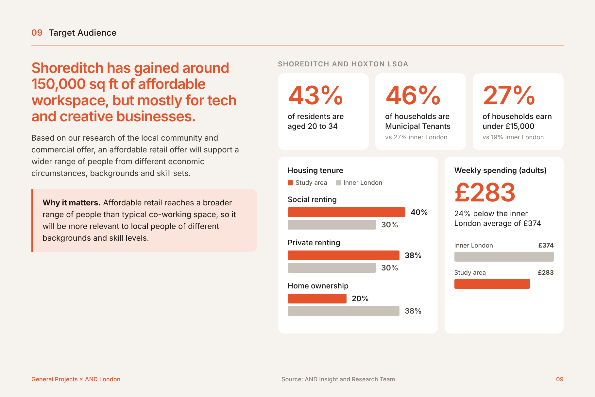
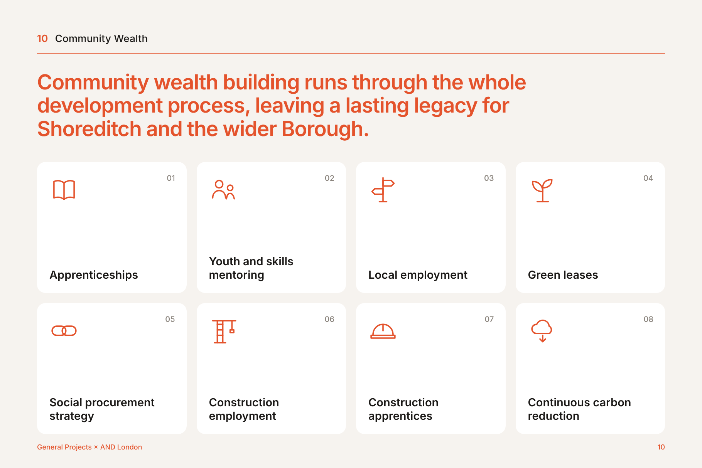

01 · Strategy deck
Turning pages of numbers into a story
A presentation arguing the case for community wealth building around the scheme. Each page leads with one headline and one hero number, so a reader gets the point before the detail. [Edit: add the audience and the outcome if you know it.]


